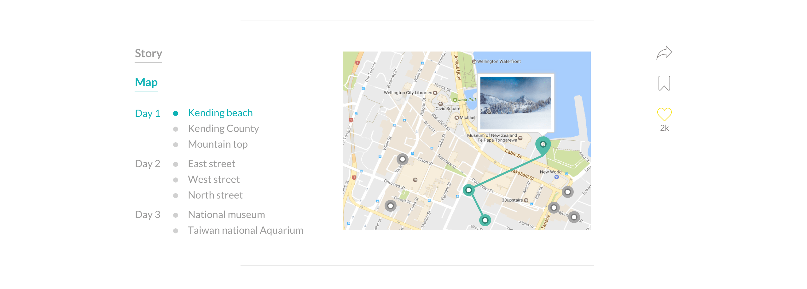

Lilitofu
- 3 min read
my Role
- Web design ・ User research ・ Product strategy
timeline & progress
- June 2017 - present. Partially shipped.
team members
- Koh (PM); dev team

Our mission
Lilitofu is a platform for sharing authentic travel stories. It is for the world explorers who always strive to live life to the fullest.
Overall process
Building a product is like building a house. No amount of decoration would make a house usable if the foundation is poorly built. Therefore, the first phase of the design process consists of exploring and refining the problems and goals. After that, we did several rounds of iteration and user tests before we arrived at the final designs.
The rest of the case study roughly maps out the process and highlights of the project.
Defining the audience
We divided our potential users into two groups. They are not mutually exclusive, but represent two major kinds of user needs that we had to consider when designing for the user experience.
User interviews: what’s useful and important?
Based on our definition of two types of users, we conducted user interviews to understand the needs of the two groups regarding travel stories.
For travel authors
- ease of use when creating and editing a story
- nice display of their stories
- enough exposures on their stories
- interactions with the readers (likes, recommendations, etc.)
For travelers/readers
- rich and high-quality contents of travel stories
- high readability of stories
- help on travel planning

Affinity mapping helps sort out the findings of user interviews
Our primary goals of a redesign
The general goal was to go from a rough MVP to a polished version 2 that delivers on the brand promise. To be more specific, we wanted the website to be able to:
- Provide great reading experience for users so that they can be inspired and prepared to travel
- Encourage travelers to share their experiences to enrich our community
Major design challenges
How might we let the contents shine?
How might we incentivize users to share their stories while keeping the quality of contents?
Information Architecture
Iterations and user tests (not final yet)
With the goals and challenges in mind, I started to explore designs on the homepage and story page, which are the meat of the website experience. Below are some explorations I tried out before reaching the final designs.
1. Homepage exploration
Square, or rectangular?
We decided to use rectangular shape for cover photos, because we found that landscape photos are much more common than portrait photos. Using a landscape rectangular shape cuts less contents from the photos, which is more ideal for both authors and readers.
Sections, more sections!
To make the homepage richer in content and to incentivize authors, we added more sections on the homepage, such as featured stories and featured authors.
2. Story page exploration
To map, or not to map? How?
When we added a map to the story page, users generally thought it was a good idea. But they were quite confused by how it worked.
"I thought the lines connecting the pins show the sequence of places he visited."
"I could hardly see the photos on the map and i thought clicking on them would ealarge them."
"What are those small dots?"
To index, but how to index?
An index of days and places visited by the author has always been part of the story page because it gives readers a quick overview of the trip. We automatically scrape the address info from the photos but also allow users to edit it. However, there were some usability issues on the index.
- The address is often too long and distracting to the reading experience.
- Sometimes authors upload multiple photos for the same place, which makes the index repetitive.
Final designs
1. Homepage
Featured Stories as the first section
Hand-picked by us and updated regularly, this is the place where stories get highest exposure.
Featured Authors as the second
Here authors get direct exposures on their personal profiles. These authors are verified by Lilitofu as Travel Authors.
Top liked stories
These are the stories that received the most likes (represented by a heart button). But since the top stories might remain unchanged for a while, we don’t want them to take up too much space. We only show 1 - 3 stories depending on screen widths, and hide the rest in a carousel.
Recent Stories gives everybody a chance
This is a never-ending list if you keep clicking on the “Load More” button. It gives every user an opportunity to expose their stories on the homepage.
Slides show upon hovering
All the stories except the "Featured Stories" are presented as slides. When hovering on a story cover photo, the cover photo changes to other photos from the story at an interval of one sec.
2. Story page

Two-level interactive index
The index of the story is a two-level index fixed on the left side. The child index of the story is simplified to dots representing each places, so that users know the progress of their reading experience. The child index of map is expanded to include the names of the places when users click into the map section, which is located at the bottom of the page. The reason behind this design is that we want to reduce clutters when the user reads the story, so that (s)he can better focus on the story itself. Also, the names of the places are already listed in the address below the photo. But when the user comes to the map section, (s)he is engaged in a trip planning mode, which makes a full blown version of index valuable. The index is fully interactive with the map.

Interactive map at the end of the story
The map is put at the bottom of the page because it is more likely to be useful after a user decided that (s)he likes the story. But if (s)he is curious about the exact location on map, (s)he can click on the address below the photo to jump to the map. By clicking on the thumbnail on the map (s)he can return to where he left the story feeds.
The map marks all the places mentioned in the story, and link them by day. Most websites of this type link all the locations with one line, which makes it hard to tell where the route starts and ends.
One caveat with this map design is that it's hard to responsively implement it on mobile screens. So I made a different version for mobile.

On the mobile view, the index is hidden in the balloon button on the bottom right corner, due to the shortage of screen real estate. Thus, to show the routes of different days, I used a page view for the map. The user flips left or right to see different days. The name of the place is added to the picture on map.
Other designs

What's next?
The next step is to push the design to be implemented as close to the mockups as possible. Right now the engineers are working on the site. Meanwhile, I started designing for the story creation feature and trip planing feature.